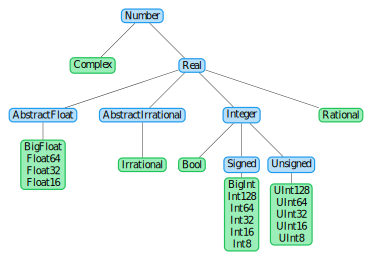

Variables
In Julia (as in other languages), a variable is a name that refers to a value. Contrary to languages like C or C++, and similarly to Python or MATLAB, variables can be created without type specification, i.e., a variable can be declared simply by using the = sign
julia> x = 2
2The type of the variable is inferred automatically and can be checked using the typeof function
julia> typeof(x)
Int64In this case, the variable x is of type Int64, which is a type that represents signed integers. Since x is a number, we can apply basic mathematical operations to it
julia> y = x + 1
3
julia> typeof(y)
Int64The type of the variable x is preserved because the sum of two integers is also an integer. We can also reuse the name of the variable and assign a new value to it
julia> x = 4
4The type of the variable x is still Int64, but it is also possible to assign a value of a different type to x
julia> x = 3.1415
3.1415
julia> typeof(x)
Float64In this case, the variable x is of type Float64, which is a type that represents floating-point numbers.
Create the following three variables:
- Variable
xwith value1.234. - Variable
ywith value1//2. - Variable
zwith valuex + y*im.
What are the types of these three variables?
Solution:
All three variables can be declared simply by assigning the value to the given variable name
julia> x = 1.234
1.234
julia> y = 1//2
1//2
julia> z = x + y*im
1.234 + 0.5imand types can be checked using the typeof function
julia> typeof(x)
Float64
julia> typeof(y)
Rational{Int64}
julia> typeof(z)
ComplexF64 (alias for Complex{Float64})Primitive numeric types
There are many types in Julia. In fact, every object in Julia has its type. As an example, we can mention the hierarchy of primitive numeric types

All types shown in blue are abstract types, i.e., it is impossible to create an instance of such a type. Abstract types are useful for creating logical type hierarchy. Types highlighted in green are concrete types. In many cases, it is useful to have the choice to choose which type to use. As an example, we can see floating-point numbers. There are four concrete types for floating-point numbers. If we want to maximize the precision of some calculations, we can use BigFloat. Using BigFloat increases precision but also increases computational time. On the other hand, if we want to speed up the code, we can use the type with lower precision, such as Float32. However, in most cases, the user does not have to take care of types and use the default type.
Variable names
Julia provides an extremely flexible system for naming variables. Variable names are case-sensitive and have no semantic meaning, i.e., the language will not treat variables differently based on their names.
julia> I_am_float = 3.1415
3.1415
julia> CALL_ME_RATIONAL = 1//3
1//3
julia> MyString = "MyVariable"
"MyVariable"Here I_am_float contains a floating-point number, CALL_ME_RATIONAL is a rational number (can be used if the exact accuracy is needed) and MyString contains a string (a piece of text).
Moreover, in the Julia REPL and several other Julia editing environments, it is possible to use many Unicode (UTF-8 encoding) math symbols by typing the backslashed $\LaTeX$ symbol name followed by tab. It is also possible to use many other non-math symbols. For example, the variable name δ can be entered by typing \delta<tab>
julia> δ = 1
1or pizza symbol 🍕 can be entered by typing \:pizza:<tab>
julia> 🍕 = "It's time for pizza!!!"
"It's time for pizza!!!"The list of all Unicode characters that can be entered via tab completion of $\LaTeX$-like abbreviations in the Julia REPL is provided in the official manual.
Julia will even let the user redefine built-in constants and functions if needed (although this is not recommended to avoid potential confusions)
julia> π = 2
2
julia> π
2However, if the user tries to use a variable name that corresponds to a built-in constant or function already in use, Julia will throw an error
julia> ℯ
ℯ = 2.7182818284590...
julia> ℯ = 2
ERROR: cannot assign a value to variable MathConstants.ℯ from module Main
[...]The only explicitly disallowed names for variables are the names of built-in reserved keywords listed in the following table
| Reserved words: | |||||
|---|---|---|---|---|---|
baremodule | begin | break | catch | const | continue |
do | else | elseif | end | export | false |
finally | for | function | global | if | import |
let | local | macro | module | quote | return |
struct | true | try | using | while |
julia> struct = 3
ERROR: syntax: unexpected "="
[...]In many cases, it is beneficial to have the choice to use special symbols as variable names. It may increase the code's readability, especially when the user needs to implement mathematical algorithms, where it is common to use the greek alphabet. However, excessive use of special symbols can be confusing.
While there are almost no restrictions on valid names in Julia, it is useful to adopt the following conventions:
- Names of variables are in lower case.
- Word separation can be indicated by underscores (
_), but the use of underscores is discouraged unless the name would be hard to read otherwise. - Do not overuse special symbols, i.e., avoid using symbols like
🍕as variable names.
For more information about stylistic conventions, see the official style guide or Blue Style.